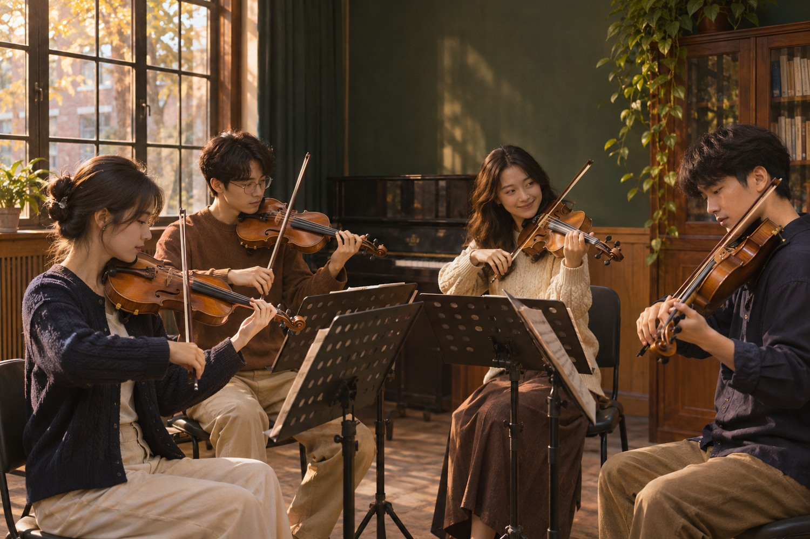

从一根空弦开始
第一次握起小提琴时，很多人会以为必须先学会一首曲子，才有资格加入合奏。弦语小提琴社的练习从更小的目标开始：让弓走得平稳，听清一根空弦的声音，知道什么时候该进入、什么时候该留出一拍给同伴。社团把排练当作可以慢慢熟悉乐器的过程。会拉几段旋律固然很好，但愿意从零开始、能听见自己的变化，也同样值得庆祝。

不必准备一首曲子。先听一听空弦，再和同伴一起数出第一拍。
第一次握起小提琴时，很多人会以为必须先学会一首曲子，才有资格加入合奏。弦语小提琴社的练习从更小的目标开始：让弓走得平稳，听清一根空弦的声音，知道什么时候该进入、什么时候该留出一拍给同伴。社团把排练当作可以慢慢熟悉乐器的过程。会拉几段旋律固然很好，但愿意从零开始、能听见自己的变化，也同样值得庆祝。
初学组先认识琴弓、琴码和四根弦，练习用肩颈和左手把琴放稳，再在老师或同伴指导下把弓轻轻放到弦上。为了避免一上手就用力过猛，我们把八拍长音缩成四拍，先用半弓，熟悉之后再延长。练习不追求大声，而是让起音、持续和收弓尽量自然。结束前，每个人可以选择一项想带回宿舍练习的动作，并写下一个自己听到的具体变化。
当独奏变成合奏，最先改变的是注意力。除了看自己的谱，还要听拍子在哪、身旁的人拉了什么。我们会把短小的旋律拆成不同声部，由基础组保持空弦节奏，有经验的同学承担旋律和装饰音。哪怕只拉两种音符，只要能在合适的位置进来，就已经参与了完整的音乐。熟悉之后可以交换声部，让大家知道伴奏并不比主旋律更容易。
如果你已经学过小提琴，社团也欢迎你带着自己的练习计划来。可以选择室内乐、校园演出或曲目改编方向，试着解决独奏里不常遇到的问题，例如统一弓法、让强弱变化一致、在听到别人偏差时保持节拍。遇到难段时，我们把它记在谱边，先分声部练习再回到合奏。愿意帮助新人的同学还可以带一次十分钟的基础热身，学习如何把经验讲得简单明白。
琴是一起活动的伙伴，也需要照顾。排练开始前检查琴弓是否合适、肩托是否牢靠，离开时松弓、擦净琴身并把琴放回琴盒。不会调弦的新人可以请有经验的同学帮忙，从认准弦名和听辨音高做起。排练时让琴盒和背包留在不挡通道的位置，也给拉弓的人留足空间。我们希望每次活动的秩序由成员共同维护，遇到设备或琴弦问题先沟通，再决定怎样处理。
大学生活的空闲时间总是变化。与其要求自己每天完成大量练习，不如设一个这一周真正能做的小目标，例如在节拍器下拉四次长弓，或者把一小节从慢速练到稳定。下次排练时带着问题来，能省掉重复摸索的时间。对基础动作有疑问也可以只观察一轮再试，不用急着跟上已经练习过的同伴。即使某次到不了，仍可以记住自己上次做到了哪一步。
有些人想站到舞台中央，有些人只希望在课余和朋友合一段曲子。我们把排练安排成可选择的路径：初学者可参加基础公开课，喜欢合奏的成员可从简单二重奏尝试，擅长摄影和文字的同学也能帮助做活动记录。没有乐器或时间还不确定，先报名说明情况，活动开始前再核对能否参加。我们不以会多少首曲子来决定是否欢迎一个人，愿意认真听、彼此尊重，就是很好的起点。
认识乐器、尝试分声部，再把练好的乐句带进一次完整的合奏。
| 弦语小提琴社 2026 年春季学期活动安排表 | |||
|---|---|---|---|
| 时间 | 活动 | 地点 | 参与方式 |
| 第 2 周 | 新成员见面会 | 教学楼 B203 | 全体新成员 |
| 第 3 周 | 小提琴基础教学公开课 | 零基础可参加 | |
| 第 5 周 | 分声部合练 | 艺术活动室 | 按基础分组 |
| 第 8 周 | 开放排练 | 艺术活动室 | 可旁听、可体验 |
| 第 13 周 | 春季成果分享 | 学生活动中心 | 演奏与观演 |
课程作业示例安排，时间和场地以实际通知为准。
开学后的第一场活动安排为新成员见面会。到场后可以先看看教室的座位、谱架和练习区，认识负责签到与组织排练的成员。见面会不设置演奏考核，带着兴趣来就可以。我们会请每个人简单说说为什么想认识小提琴、是否接触过弦乐、这一学期大致有多少练习时间。组织者据此介绍基础组和合奏组，让想试一试的人也能选到合适的第一场活动。
小提琴基础教学公开课和见面会共用教学楼 B203，方便新人熟悉场地。公开课按认识乐器、持琴持弓、拉空弦、一起数拍的顺序展开。体验前先留出时间调整站姿与肩托；有基础的同学可以示范，不要求新人立即照着拉完整曲子。第一次出现杂音很正常，先尝试放慢弓速、减少压力，再听声音是不是更顺畅。课程结束后留出提问时间，不清楚的动作可以当场再确认一遍。
见面和公开课之后，基础组进入短时的分项练习。每次只安排少量动作，例如换弦、停弓和四拍长音。领练同学用节拍器给出慢速拍子，大家先听两小节再一起加入。乐器声音太多听不清时，就轮流演示，由其他同学在不打断的情况下记下一个可以调整的细节。时间允许时可以用手机录一小段，回听起音是否一致，作为下次练习的参考。
有一定基础的同学进入分声部练习。先核对音符和节拍，再决定统一的弓法和力度。分组期间，旋律声部与伴奏声部分别解决自己的难点；合在一起后要留意谁需要被听见、谁需要把音量放轻。合奏时一旦有人错过一个音，可以等下一处容易辨认的拍点再加入，不必从头停下来。组织者会记录最容易出错的两处段落，下次集中排练时优先检查。
开放排练允许对社团感兴趣的同学旁听。旁听者可以先看大家怎样摆谱架、怎样调音和分组，再决定是否参与一小段简单练习。为了保证排练时间，提问集中放在段落间歇，不在一首曲子中间打断。若想上手体验，应提前说明自己有没有乐器，并听从现场安排。社团根据实际人数安排座位和练习搭档，避免初学者一下子被安排过多内容。
学期中后段安排小型成果分享，曲目可以短，重要的是把准备好的段落完整演奏出来。彩排前先检查乐器、琴谱和站位，约定开始与结束的提示。上台前可以先在安静处数几拍，找回平时的速度。分享结束后，我们不只讨论错音，还会记下哪一次配合变顺了、哪里听得见各声部，这些观察能帮助下一次排练。没有上台计划的成员也可以在现场帮助整理谱架与记录流程。
页面时间为课程作业中的 2026 年春季学期示例安排，实际活动需要以社团通知为准。遇到课程、考试或教室调整时，可以先说明可参加的时间，再决定补练方式。报名的同学不必承诺参加每一次活动，但参加前应读清楚集合地点与需要携带的物品。若参加不了已经确认的活动，提前说明能让同伴调整座位与声部。比准时完成一张表更重要的，是让大家都知道下一次练习从哪里开始。
看一场合奏如何开始。点击照片，查看开放排练的活动介绍。
风采展示选择了一幅校园室内合奏的创作图。靠窗的光照到琴身和谱架，几位演奏者各自看着自己的谱，却又在同一个节拍里交流。这是我们想用网页表达的社团氛围：演奏不只发生在正式舞台，也发生在课后有一点空余的时间里。点开照片可以进入活动介绍，了解如何参加一场开放排练，或者先在一旁观察大家怎样合作。
最容易注意到的往往是小提琴本身，但合奏的秩序常藏在细节里。谱架高度合适时，演奏者不用总把头低下去；椅子位置留够空间时，弓才不会碰到旁边的人。合奏之前把曲谱翻到同一页、把椅子摆成便于听见彼此的角度，这些小事能少很多临时停顿。观察画面时，不妨想想哪一处空间能让大家更方便地交换眼神，哪一个人可能在给出开始的提示。
一段旋律听起来有层次，不一定因为音符多。一个声部可以把长音拉得稳，另一个声部用短音画出节拍，主旋律就能自然突出。排练时我们会先让大家只听一个声部，再把其余部分加进来，发现平时被遮住的线条。对于初学者，分辨这些声音比要求自己立刻听懂所有乐理更实用。有人在中途拉错一个音，也可以通过听伴奏判断自己应该从哪一拍回到合奏。
本页的短片取自同一张合奏图，用缓慢推进的镜头和首尾淡入淡出做成约五秒的片段，配上本页原创主题旋律的一小段。它是一则招新预告，不是真实排练录像，也不是对某场演出的记录。短片不必把所有活动塞进去，只需要让观众迅速认识主题和氛围。想听完整配乐，可以使用页面左上角的音乐按钮；观看短片时，页面会暂停背景音乐，避免两段旋律叠在一起。
如果要记录一场真实活动，除了拍摄最终演奏，还可以记录第一次合奏的片段、分组练习时讨论弓法的情景，以及成员们对同一小节的不同解决办法。记录者最好事先征得出镜同学同意，选择能够看清动作、又不会打扰演奏的位置。将成片与活动日期、曲目和拍摄场景一起标明，观众才能知道自己看到的是课堂体验、公开排练还是舞台展示。我们也欢迎只用文字和谱面做记录的同学。
风采也来自幕后。有人负责把谱面按声部分好，有人提前确认教室和电源，有人排练结束后检查谱架是否归位。这些看似普通的工作决定了演奏能否顺利开始。不会拉琴的同学可以从协助活动做起，逐渐了解合奏的节奏；已经能演奏的人也可以尝试记录一次完整排练，理解组织者为什么需要提前收集出勤信息。每次活动都需要演奏者和支持者一起照料细节。
如果你刚开始学习，不妨每隔两周录一次相同的短句，记下当时的速度和练习重点。不要只挑最好的一次，也可以保留其中有杂音的一次。隔几天再听，你更容易察觉弓走直了、换弦更清楚了，或者原本紧张的地方放松了一些。把这样的变化带回排练，比只说自己练得好不好更能得到具体建议。展示既可以是一段公开演奏，也可以是给自己看见变化的一小段声音。
周三的第一声 · 一则从空弦练习开始的招新情景故事。
那天她没学完一首曲子，但第一次听见自己的声音和同伴落在同一拍。
以下故事为招新页面创作的情景示例。周三傍晚，第一次来练琴的林澄提前十分钟到了教室。她把琴盒放到墙边，拿着弓站了半天，不知道该从哪里开始。旁边负责领练的同学没有问她会几首曲子，而是先示范怎样把弓放在空弦上，再请她听两遍同样的声音。第一次试拉时，弓还没走到一半就偏到了指板边，出来的声音像是被什么绊了一下。她抬头看了一眼，才发现另外两位新人也在经历同样的事。
领练同学没有让大家立刻换新的动作，而是把任务改成只拉一拍。他用手轻轻打拍子，请大家在拍点上同时起弓，然后停下。林澄第一次快了一点，第二次在最后一瞬间才跟上，第三次终于听到自己的声音和身旁的人落在一起。她开始明白，所谓合奏不是每个人都必须很厉害，而是先学会在一个共同的时间里做同一件事。那天临走前，她把“四拍长音先从一拍练起”写在便签上，夹进琴盒。
第二次练习，林澄可以让空弦听起来稳定一些，但换弦总是抢拍。她试着把节拍器调快，以为跟着更快的速度练习就能解决，结果反而更慌。一个同伴让她先不拉声音，只用右手演练抬弓和落弓的动作，留意手臂移动到下一根弦需要多少时间。把这段动作放回两拍节奏后，她才发现不需要在最后一刻急着换弦。那次练习没有练完整首曲子，却解决了一个反复出现的小问题。
分组练习时，林澄被安排拉一段简单伴奏。她只需要在几个固定拍点上拉空弦，而另一位同学负责上方旋律。刚开始她总被好听的旋律吸引，忘记数自己的拍子。对方没有叫停，而是先把旋律放慢，在每个重拍轻轻点头。几遍以后，她不再需要一直盯着对方，听到和声变化就知道下一次应该什么时候进入。她原本觉得伴奏的音符少，后来才知道这些音符的位置非常重要。
临近考试的一周，大家都没能按原计划练习。合练一开始速度忽快忽慢，连熟悉的开头也拉散了。组员没有继续从头重复整首曲子，而是选出最乱的两小节，分别试了慢速数拍、两个人对拍和只练弓法三种方法。最后大家把速度降到能稳定完成的位置，先结束在一次完整的合奏上。林澄以前觉得放慢是退步，那天却看到同伴如何把复杂的段落拆开，再一点点拼回去。
学期成果分享只安排了三分钟的小曲。等候时，林澄把谱翻到标着彩色便签的那页，手心有点出汗。站在最外侧的同伴提醒她，出错时不用追赶已经过去的那一拍，等下一个熟悉的拍点再回来。上台之后，她还是少拉了一个音，不过没有停住，顺利接进了下一句。演出结束时她只记得最后一拍大家同时收弓，接着是一段很短的安静，再有人开始鼓掌。
下一次见面会，有位新同学问林澄自己从没学过弦乐，会不会拖大家后腿。她没有说第一天就能拉得很好，而是告诉对方自己怎样把四拍长音改成一拍练，怎样在练习记录里写下一个小目标。随后她把谱架挪到一个更亮的位置，让新人能看清琴弦。她觉得最有意思的是，以前自己需要别人提醒哪里开始，后来竟也能为另一位同学数出第一拍。对她来说，这就是最想留下的社团故事。
先选择想体验的方向。零基础可以从开放排练和入门课开始。
课程作业演示。提交只在本页校验，可下载填写内容，不会上传或发送。
在线报名面向对小提琴和室内合奏感兴趣的同学。无需先准备曲目，也不需要为了报名临时购买乐器。还没有接触过乐器，可以选择零基础和入门教学方向；有基础的同学可以选择室内合奏、演出准备或曲目改编。表格里最有帮助的信息是你的兴趣、能参与活动的时间，以及希望从社团得到什么样的练习机会。组织者据此安排体验课和分组，避免把不同基础的同学全部安排在同一进度。
姓名填写便于现场核对的称呼，手机和邮箱用于说明联络方式。出生日期的年、月、日分别输入，例如 2007、9、15；填写时可以省略月份与日期的前导零。页面会检查日期是否存在，也会检查手机号和邮箱的基本格式。若只是浏览课程示例，请使用模拟数据，不必输入真实联系方式。填写结束后先检查是否有多余空格、漏填或打错的数字，再执行表格底部的提交校验。
对哪一种活动感兴趣并不需要马上确定，可以多选。基础教学重在找到舒服的姿势与稳定的发声；室内合奏适合想练习听辨和节拍配合的同学；校园演出强调完整呈现和排练纪律。喜欢创作的同学可以关注简单曲目改编，擅长摄影、剪辑或写作的同学也可以选择活动记录。初次选择只是分组参考，体验之后可以根据自己的时间和喜好再调整。
自我介绍可以短一些，写清楚你为什么对小提琴感兴趣、之前有没有练过乐器、希望参加什么样的活动。例如，喜欢电影配乐，想从空弦练习开始，周三或周末有空；也可以说，学过几年的乐器，希望找同伴尝试简单二重奏。请写自己愿意公开给组织者的信息，不要把身份证号、家庭住址或其他与本次活动无关的内容写进介绍。介绍的作用是帮助组织者安排体验，并不用于评价文采。
“是否服从活动安排”指是否愿意遵守排练时间、现场秩序和乐器使用规则。有课程冲突、身体不适或其他安排时，应该提前沟通，而不是为了参加活动忽略自己的正常学习生活。若暂时无法确定能否配合某项安排，可以如实选择并在介绍里说明。只有知道大家可参加的时间和实际困难，组织者才能把活动安排得更合理。即使暂时不适合加入固定合奏，也可以先报名参加一次体验活动。
此页面是静态课程作业，点击“提交报名”会在浏览器内检查信息，并显示填写成功的提示。填写内容不会发送给任何组织者，也不会上传到服务器。需要留存时可以自行下载一份报名信息文本；下载前请确认设备是否由你本人使用。点击“重置”会清空表格和当前提示。如果学校另有正式报名渠道，请以组织者发布的正式通知为准；此处不以页面提示代替正式报名确认。
第一次来参加活动，最好提前几分钟到场，穿方便活动手臂的衣服，准备纸笔或者手机记下练习重点。已有小提琴的同学可以带琴、琴弓和肩托；没有乐器的同学也可以先旁听、了解基本动作，再根据现场安排体验。若从未调过弦，不要自行用力拧弦轴，可向领练同学求助。最重要的是带一个想弄清楚的问题，例如怎样拉出平稳的长音，或者怎样知道自己和同伴在同一拍上。带着问题来，往往比准备得很完美更有收获。